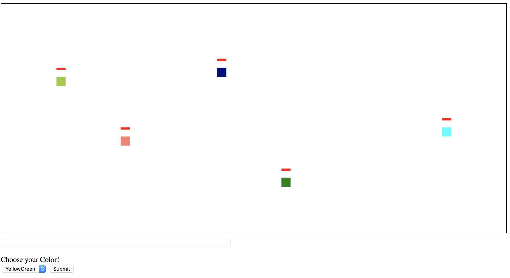

Computer Science Projects
Here are a few of the Many Projects I have worked on in my time as a Computer Science Student!
Block FFA
BlockFFA, or Block Free For All is a very primative version of a multiplayer "Free for All" game which I did in the spring of 2017 for a project in AP: Computer Science A. It really was my first foray into the world of the internet, and networking. I used the Node.js framework, as well as the Socket.io framework, which really made it much simpler to be able to connect multiple computers to one program. It taught me the basics of networking, and the relationship between client and server. It also really taught me the basics of HTML and Javascript, which I have since learned much more about. Through this, javascript has become one of my favorite languages, although it is quite tricky to get working sometimes. I love it because of it's versatility, and how much it used on a daily basis by web developers across the world. I did this in about 2 or 3 weeks, so the game isn't really fleshed out entirely. It really is just a prototype, and a stepping stone for things I will be doing in the future. I have made a few non-deployed updates to BlockFFA, I fully intend to make it into a full fledged game eventually. I hope to turn it into an ever popular "io" game, and have players around the world playing it daily. I am currently working on Usernames, statistics, and multiple rooms, so the game area doesn't get crowded. I took HUGE inspiration from TagPro, I encourage anyone reading this to check it out. I am really proud of this one, as it really taught me most of what I know about web programming today!
Click here to check out BlockFFA!